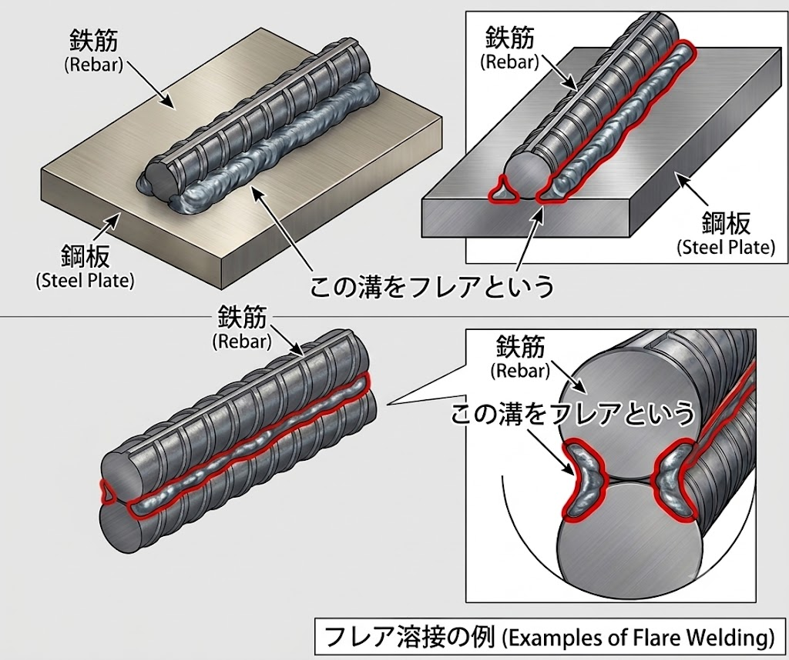
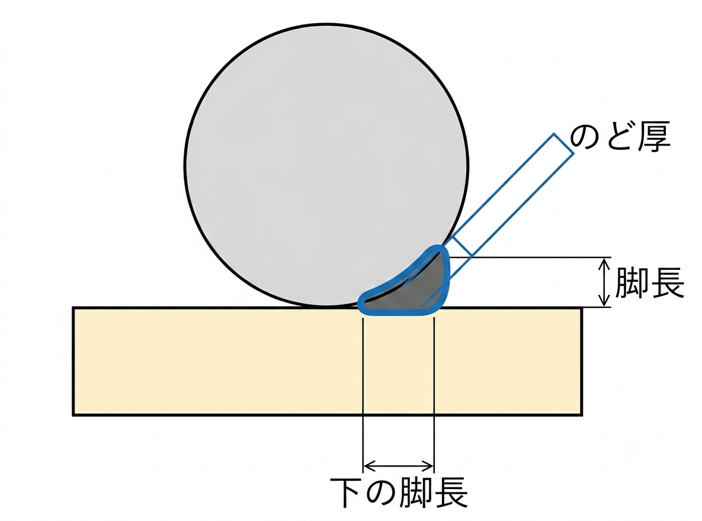
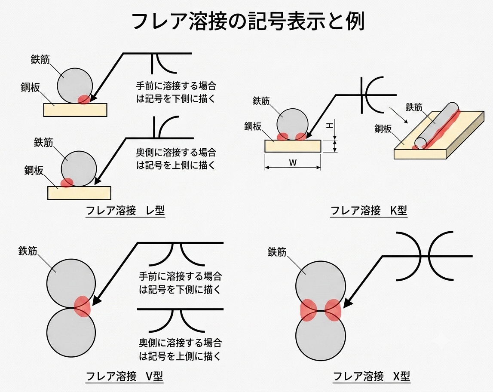

フレア溶接とは？脚長・のど厚・溶接長さの基準と記号・資格を解説
フレア溶接とは、開先が円弧となる部分（＝フレア）に施す溶接方法です。鉄筋どうしや鉄筋と鋼板の接合（杭頭補強筋と鋼板の接合など）、軽量形鋼の接合では、接触部の溝が円弧状になるためフレア溶接を用います。この記事では、フレア溶接の意味・脚長・のど厚・溶接長さの基準、溶接記号（レ型・K型・V型・X型）、アーク溶接との違い、必要資格までを整理します。
- フレア溶接は、鉄筋・鋼板の円弧状の溝（フレア）に施す溶接。杭頭補強筋・鋼管杭などに使う。
- 記号はレ型・K型・V型・X型。鉄筋どうしはX型、鉄筋と鋼板はK型が一般的。
- 脚長は薄い方の0.7倍程度、のど厚はサイズの0.7倍以上、溶接長さは片面10d+2S／両面5d+2S。
フレア溶接とは？
フレア溶接とは、開先が円弧となる部分（フレア）に溶接する方法です。鉄筋と鋼板の溶接や、鉄筋を2本重ねて溶接する場合、鉄筋が円形のため、溶接部にラッパ（朝顔）状に広がった円弧状の溝（開先）ができます。この円弧状の開先をフレアといい、英語では「flare groove weld」と呼びます。

建築構造物では、フレア溶接を次のような部分に用います。
- 杭頭補強筋（ひげ筋）
- 鋼管杭
- 床スラブ筋
- 柱の帯筋
鋼板と鉄筋の溶接は、おもに杭頭補強筋の接合で使われます。継手全体は「鉄筋の溶接とは？」もあわせてどうぞ。
フレア溶接の脚長（サイズ）
フレア溶接の脚長（サイズ）は、鉄筋・鋼板に生じる応力で決めるもので、板厚から自動的に決まるものではありません。ただし実用上は、
とします。たとえば、板厚12.7mmの鋼板と径25mmの鉄筋を溶接する場合、脚長（サイズ）は
とします。薄い方を基準にする理由は、太い方（径25mmの鉄筋）を基準にすると、それより薄い鋼板は「25mmの鉄筋の全耐力を負担できない」ためです。フレア溶接に限らず、薄い板と厚い板を溶接する場合は薄い板を基準に耐力を算定します。
フレア溶接ののど厚
フレア溶接ののど厚（のどあつ）は、サイズ（脚長）の0.7倍（70%）以上とします。これは通常の隅肉溶接と同じ考え方です。

フレア溶接の溶接長さ
フレア溶接の溶接長さは、次のとおりです（d＝鉄筋径、S＝溶接サイズ）。
| 溶接 | 必要な溶接長さ |
|---|---|
| 片面溶接 | 10d 以上 ＋ 2S |
| 両面溶接 | 5d 以上 ＋ 2S |
特に理由がなければ、実務では溶接長さを短くできる両面溶接とすることが多いです。
フレア溶接の記号（レ型・K型・V型・X型）
フレア溶接の溶接記号には、レ型・K型・V型・X型があります。鉄筋どうしのフレア溶接はX型、鉄筋と鋼板はK型が一般的です。手前側に溶接する場合は記号を基線の下側、奥側に溶接する場合は上側に描きます。

アーク溶接との違い
フレア溶接とアーク溶接はまったく別の概念です。
- アーク溶接＝溶接の方法（熱源・方式）の一つ。電極間の放電（アーク）で生じる高熱で金属を溶かして接合します。ほかにガス溶接・レーザー溶接などがあります。
- フレア溶接＝溶接継目（開先）の形態の一つ。開先形状にはI型・V型などがあり、フレアはその円弧状のものです。
つまり「方法＝アーク溶接」「溝の形＝フレア（開先の一種）」で、両者は別の切り口の用語です。なおアークとは、電圧をかけたときに生じる弧（Arc）状の強い光と高熱のことです。
フレア溶接に必要な資格
フレア溶接の施工に必要な資格は、一般に「半自動溶接適格性証明書」です。日本溶接協会により溶接技能が認証された溶接技能者に発行されます。
- 有効期限は1年。
- 継続する場合は、有効期間満了の3か月以内に更新（サーベイランス）手続きが必要です。
アーク溶接はアーク（放電）の高熱で金属を溶かして接合する溶接「方法」の総称。開先溶接は母材に開先（溝）を設けて溶接金属を充填する溶接で、I型・V型・X型・K型などがあります。フレア溶接は、鉄筋の円弧状の溝（フレア）を開先とする溶接で、開先溶接の一種です。
フレア溶接のまとめ表
| 項目 | 内容 | 備考 |
|---|---|---|
| 溶接記号 | レ型・K型・V型・X型の4種類 | 鉄筋どうしはX型、鉄筋と鋼板はK型が一般的 |
| 脚長（サイズ） | 薄い方の板厚（径）の0.7倍程度 | 小さい方を基準にする |
| のど厚 | サイズの0.7倍以上 | 隅肉溶接と同じ考え方 |
| 溶接長さ | 片面：10d以上+2S／両面：5d以上+2S | 実務では両面溶接が多い |
まとめ
- フレア溶接は円弧状の溝（フレア）に施す溶接。杭頭補強筋・鋼管杭などに用いる。
- 脚長は薄い方の0.7倍、のど厚はサイズの0.7倍以上、溶接長さは片面10d+2S／両面5d+2S。
- 記号はK型・X型が頻出。アーク溶接（方法）とフレア溶接（開先の形）は別物。施工には半自動溶接の資格が必要。
溶接の全体像は「鉄筋の溶接とは？（エンクローズ・フレア）」、継手の種類は「鉄筋継手の種類とは？」、圧接は「鉄筋の圧接（ガス圧接）とは？」をどうぞ。
※脚長・のど厚・溶接長さ・記号・資格の詳細は、各規準・仕様書（公共建築工事標準仕様書、溶接協会規格など）や年度の改定により異なる場合があります。実務では必ず採用基準の最新版をご確認ください。